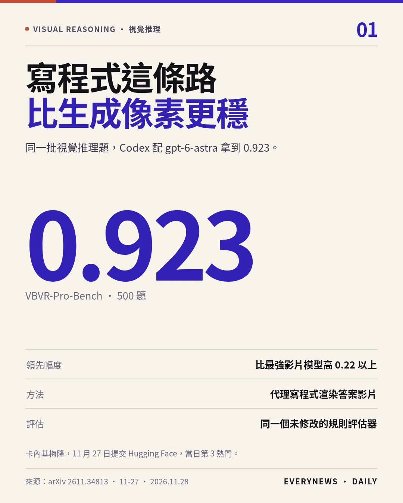
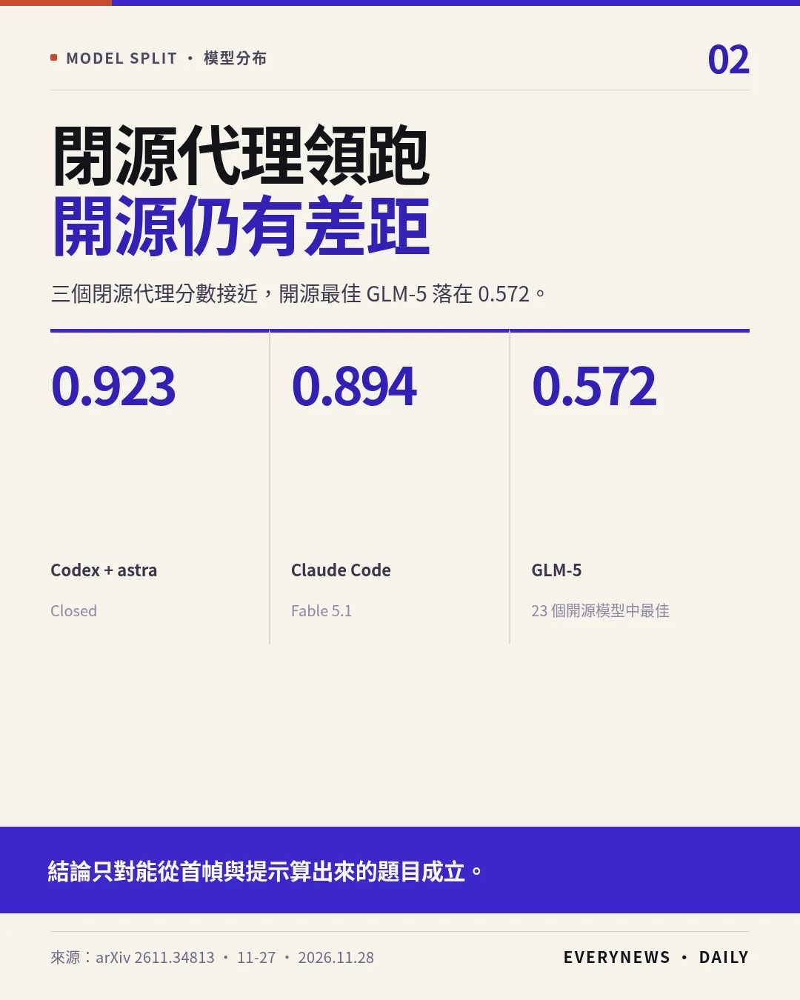

卡内基梅隆的研究把同一批视觉推理题同时交给写程序的代理和生成视频的模型，在 VBVR-Pro-Bench 的五百道题上，Codex 配 gpt-6-astra 拿到 0.923，比最强的视频模型高出 0.22 以上。做法是让代理看同一张首帧和提示词，写一段程序把答案渲染成视频，再交给同一个未经修改的规则评估器打分，代理拿不到标准答案和生成模型。开源模型里最好的 GLM-5 只有 0.572，低于经过强化学习训练的视频模型。结论有明确边界，只对那些能从首帧和提示算出来的题目成立，规则评估器也天然偏向符号化的确定答案。
写程序比生成视频更会看图

檢視原圖
檢視原圖| 主体 | arXiv 2611.34813，Solve Vision with Code，卡内基梅隆大学 |
|---|---|
| 发布 | 论文 11 月 25 日，11 月 27 日提交 Hugging Face，当日第 3 热门 |
| 基准 | VBVR-Pro-Bench，500 个实例，5 个认知类别，符号化标准答案 |
| 设置 | 同一首帧与提示词，代理不得访问标准答案、元数据与生成模型，每题一次机会 |
| 闭源代理 | Codex 配 gpt-6-astra 0.923，Claude Code 配 Fable 5.1 0.894，Gemini CLI 配 Gemini 3.1 Pro 0.893 |
| 差距 | 三个闭源代理均比最强视频模型高 0.22 以上 |
| 开源 | 23 个可运行开放权重模型中 GLM-5 最佳，0.572 |
| 局限 | 结论只适用能从首帧与提示算出的任务；规则评估器偏向符号化输出 |
| 来源 | https://arxiv.org/abs/2611.34813 |